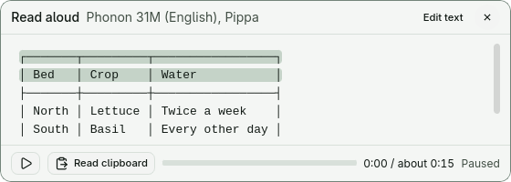
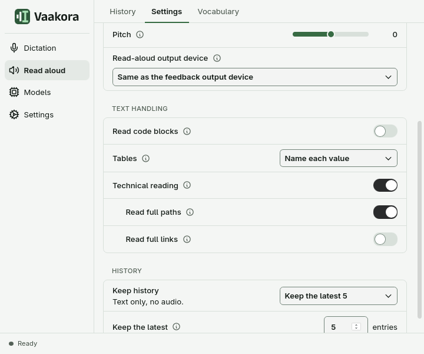

Tables
Vaakora reads tables in the text you copy: box-drawing tables, ASCII tables and Markdown tables. They are read row by row, each value with its column name, and their borders are not spoken. Box-drawing characters are never spoken anywhere.
This is the table used on this page. It is copied text, and the reader shows it in a monospaced font so its walls line up.
┌───────┬─────────┬─────────────────┐ │ Bed │ Crop │ Water │ ├───────┼─────────┼─────────────────┤ │ North │ Lettuce │ Twice a week │ │ South │ Basil │ Every other day │ └───────┴─────────┴─────────────────┘

Style A: Name each value
Every value is read with its column name. This is what is spoken for the table above:
Table, 3 columns, 2 rows. Row 1. Bed: North. Crop: Lettuce. Water: Twice a week. Row 2. Bed: South. Crop: Basil. Water: Every other day. End of table.
Style B: Names once, then rows
The column names are read once, then each row's values. This is what is spoken for the same table:
Table, 3 columns, 2 rows. Columns: Bed, Crop, Water. Row 1: North; Lettuce; Twice a week. Row 2: South; Basil; Every other day. End of table.

- Choose the style with the Tables setting in Read aloud, Settings.
- A table that cannot be read with confidence is read in its original order without its borders.
- A code block that holds only a table is read as a table, also when Read code blocks is off.